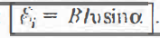

- Если магнитная индукция В возрастает со временем и Ф > О, то > О.
- В замкнутом проводящем контуре возникает индукционный ток i при изменении числа линий магнитной индукции, пронизывающих площадь, ограниченную этим контуром.

Согласно правилу Ленца, индукционный ток i создаст магнитный поток Ф< О. Линии индукции магнитного поля В' индукционного тока изображены пунктиром. Согласно правилу буравчика, индукционный ток i направлен по часовой стрелке (против направления положи тельного обхода) и e отрицательно.
Поэтому в законе электромагнитной индукции должен стоять знак минус, указывающий на то, что e и имеют разные знаки.
- Порядок применения правила Ленца для нахождения направления идукнионноrо тока i:
1) Установить направление литий В внешнего поля; 2) определить изменение ∆Ф (∆Ф> 0 или ∆Ф <О); 3) установить направление линий Ё индукционноrо тока i; линии направлены противоположно В при ∆Ф > О и имеют одинаковое направление при ∆Ф < О; 4) зная направление линий В, пользуясь правилом буравчика, найти направление индукционного тока i.
ВИХРЕВОЕ ЭЛЕКТРИЧЕСКОЕ ПОЛЕ
Изменяясь во времени, магнитное поле порождает электрическое поле, имеющее другую структуру, чем электрическое. Оно не связано непосредственно с электрическими зарядами, а линии напряженности электрического поля представляют замкнутые линии. Такое электрическое поле называется вихревым.
- Работа вихревого электрического поля при перемещении единичного положительного заряда вдоль замкнутого неподвижного проводника численно равна ЭДС индукции в этом проводнике. В движущемся в постоянном магнитном поле проводнике ЭДС индукции обусловлена не вихревым электрическим полем, а силой Лоренца: 
САМОИНДУКЦИЯ
- Магнитный поток Ф контура с током l равен: Ф=LI где. L-коэффициент самоиндукции, или индуктивность
Единица индуктивности в СИ - генри ([l] = Гн).
За единицу индуктивности принята индуктивность электрической цепи, с которой при силе постоянного тока в ней в 1А сцепляетcя магнитный поток 1Вб (или если 1 при изменении силы тока на 1А за 1с в контуре возникает ЭДС самоиндукции 1В).
- ЭДС самоиндукции равна:
- Энергия магнитного поля равна: